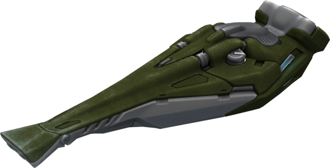
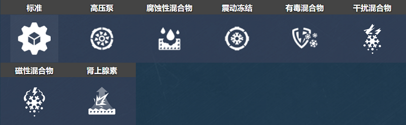
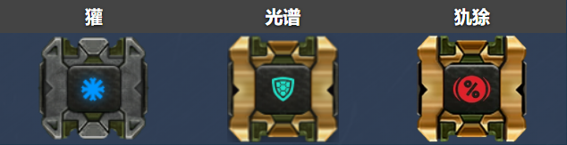
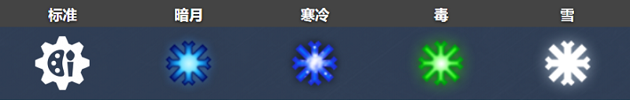
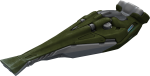
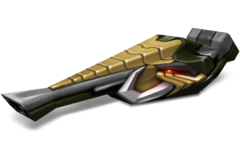
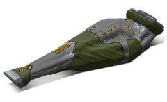

概括
虽然这个炮塔的设计类似于火焰炮，但它的功能有些不同；
它向你的对手喷射一个锥形液氮，造成伤害并具有将对手冻结成固体的有趣能力（因此得名），
在此过程中使他们无法动弹。
从进攻和防守的角度来看，对于那些对互夺军旗游戏风格感兴趣的人来说，这是一个绝佳的选择。
车库中的描述
近战炮塔。冻结敌人，有效地减缓至关重要的目标。
可以扑灭正在燃烧的坦克上的火。能量供应有限，随时间恢复。
这个炮塔背后的概念是在一个遥远的俄罗斯村庄设计的。
当地的发明者利用破碎的冷冻装置和真空吸尘器创造了一种射雪球的机制。
该造物是在附近钓鱼的工程师发现的，并在一所秘密研究型大学申请了多次升级后，该机械装置变成了强大的坦克炮塔。
用基于氟利昂的化合物覆盖目标，炮塔会损坏并冻结目标，减慢其所有移动速度。
完全冻结敌人并逃离其射程的能力允许与更强大的坦克作战。
重要的是要记住——不要把你的能量供应浪费在和你的盟友打雪仗上。
当然，这很有趣，但主战坦克有战斗要做。
装备改造

防御模块

射击效果

皮肤

冰风暴标准

冰风暴 XT

冰风暴 SE